"Transformando
datos complejos
en
decisiones estratégicas
de negocio."
Actuario
enfocado en ciencia de datos,
analítica predictiva, cálculo de riesgos
y business intelligence. Apasionado por
la solución de problemas complejos mediante
modelos cuantitativos y herramientas
tecnológicas de alto impacto.
Contacto
Estoy disponible para nuevos desafíos.
Si quieres colaborar o agendar una llamada,
contáctame aquí.
✨ Desliza el cursor por esta tarjeta
para explorar el portafolio
Sobre Mí
Educación
Licenciatura en Actuaría
Universidad:
Benemérita Universidad Autónoma de Puebla (BUAP)
Periodo:
Agosto 2021 – Diciembre 2025
Promedio: 9.74
Estatus:
Título en Proceso
Habilidades Técnicas
Herramientas y tecnologías que domino para desarrollar modelos de machine learning, modelos actuariales, estadísticos y simulación de escenarios junto con gráficas para ejemplificar resultados, además de funciones de optimización. También las empleo para cargar, limpiar y transformar datos previo a cualquier análisis o para construir dashboards interactivos que ayudan a identificar tendencias y patrones de forma muy visual.
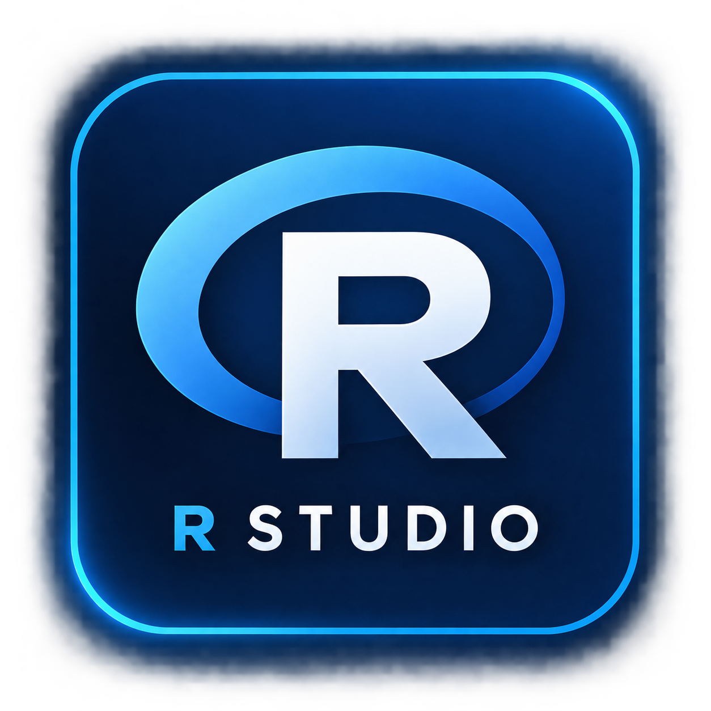
R Studio
Utilizado para modelado estadístico avanzado, análisis de datos y generación de reportes reproducibles.
Librerías:
dplyr, tidyr
ggplot2
caret
readxl
RMarkdown
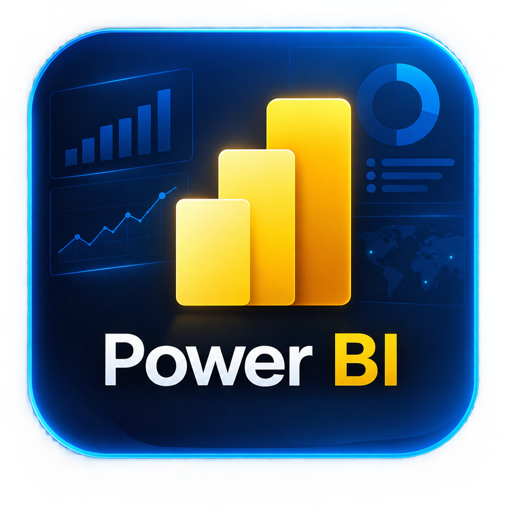
Power BI
Desarrollo integral de tableros de Business Intelligence e inteligencia analítica corporativa.
Herramientas:
Crear medidas en DAX
Relaciones de tablas
Campos calculados y parámetros
Diseño de visuales interactivos
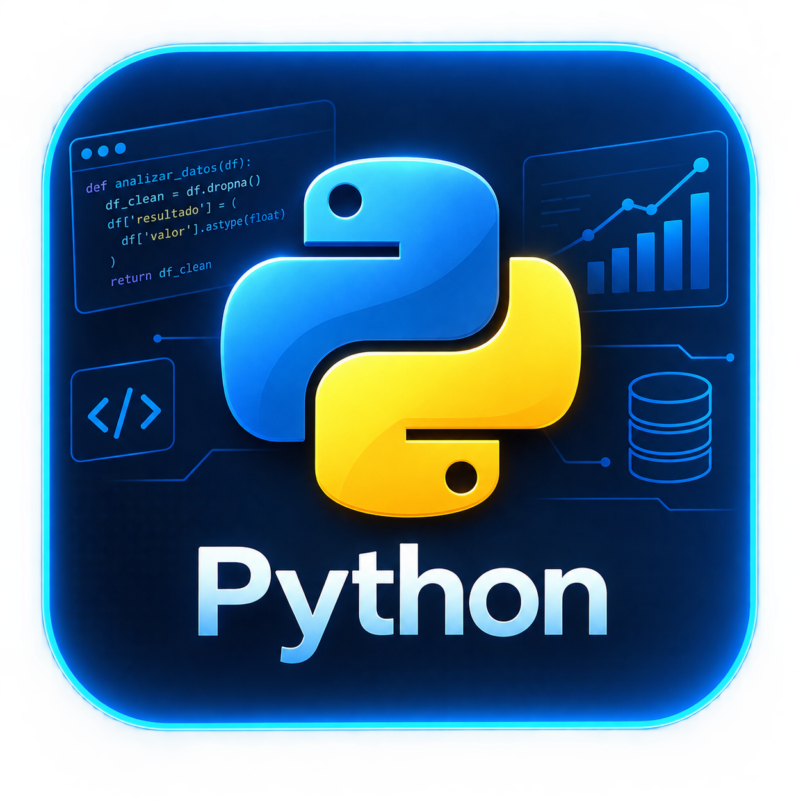
Python
Aplicado en machine learning, automatización de procesos y desarrollo de algoritmos cuantitativos.
Librerías:
pandas, numpy
scikit-learn
seaborn, matplotlib
Excel
Gestión avanzada de bases de datos operativas y automatización orientada a la eficiencia diaria.
Herramientas:
Tablas dinámicas y gráficos analíticos
Fórmulas avanzadas
Macros y automatización en VBA
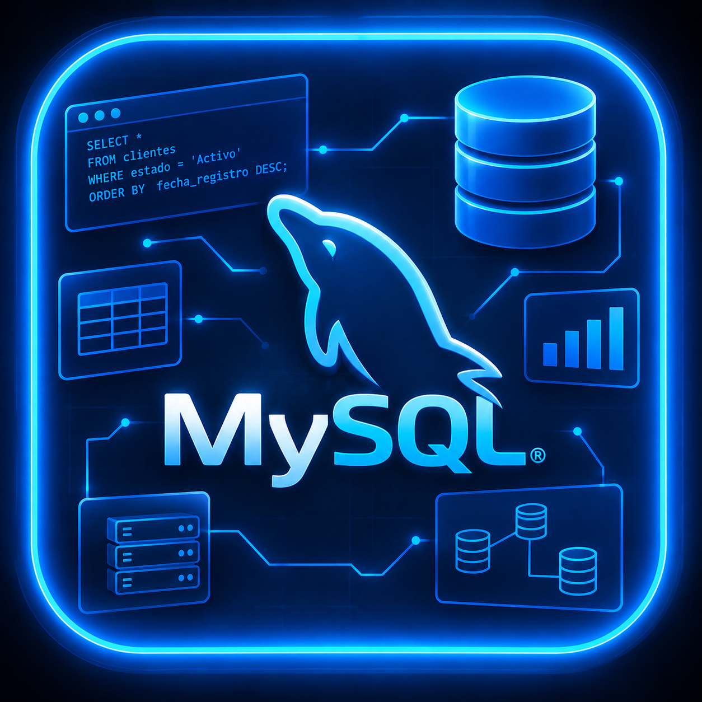
MySQL
Diseño de estructuras de almacenamiento y consultas eficientes para extracción de datos relacionales.
Área:
Movilidad y Transporte
Periodo:
03/02/2026 - 07/08/2026
Responsabilidades
Automatización:
Reducir tiempo y carga de trabajo en actividades
repetitivas, mejorando la eficiencia operativa.
Digitalización:
Desarrollo de aplicaciones para contar con un
entorno amigable y formularios eficientes para
captura de datos.
Visualización y Análisis:
Creación de dashboards para identificar
oportunidades de mejora y apoyar la toma de
decisiones.
Herramientas
Power BI
Power Query
Visual Basic for Applications (VBA)
Excel Avanzado
SharePoint
Power Automate
Power Apps
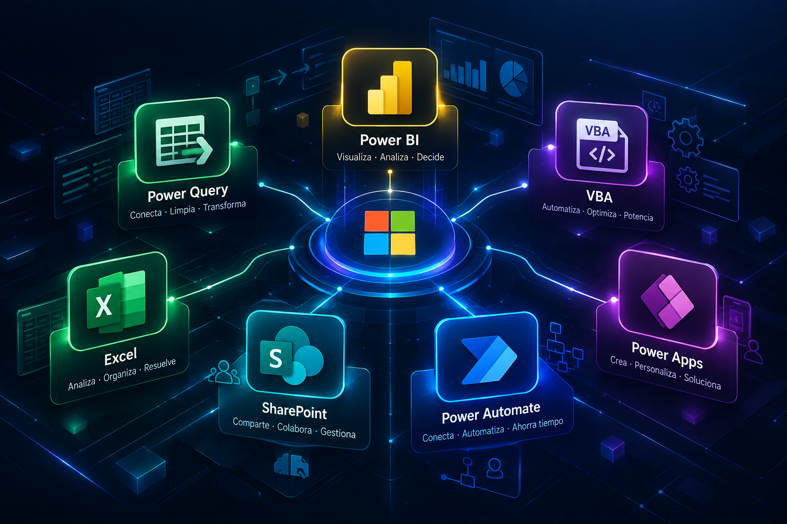
Entregables
1. Consolidación y Auditoría de Datos de Posiciones
Contexto y Desafío
La información de vacantes y posiciones estaba dividida en dos sistemas distintos: un reporte en .csv de SuccessFactors y otro en .xlsx de SAP. Para consultar el estado completo de una posición (empleado asignado, departamento, centro de costos, etc.), el equipo tenía que abrir ambos archivos y buscar las coincidencias de manera manual, lo cual quitaba tiempo y provocaba inconsistencias.
Solución
Automatización del flujo (ETL): Centralicé la recepción de los archivos en OneDrive y conecté Power Query para automatizar la carga, limpieza y transformación de los datos.
Homologación de IDs: Normalicé las claves de posición (extrayendo caracteres para igualar formatos entre ambos sistemas) e integré un catálogo de equivalencias para resolver las coincidencias que no eran 1 a 1.
Fusión de reportes (Joins): Hice la unión de ambas fuentes para generar un único reporte unificado y optimizado con solo la información necesaria.
Detección de errores: Creé una consulta de validación con columnas calculadas que resaltan automáticamente los casos donde los datos de SF y SAP no coinciden, permitiendo corregir errores de origen rápidamente.
Resultados e Impacto
Se eliminó el proceso manual de buscar y cruzar archivos fila por fila.
Se creó un punto único de consulta siempre actualizado.
Se mejoró la calidad de los datos al detectar fácilmente discrepancias entre ambos sistemas.
Recursos Implementados
Power Query, Excel, OneDrive, ETL, Limpieza y Validación de Datos.
2. Macro de Automatización para la Planeación de Paros de Producción
Contexto y Desafío
Durante los paros de producción, se requería consolidar la asistencia de empleados por área y calcular los conteos de personal por Ruta y Parada de transporte. Este proceso manual requería la coordinación entre el área de transporte y los planeadores de cada departamento, demandando el trabajo de dos personas durante más de una hora para limpiar, cruzar datos y generar los reportes necesarios.
Solución
Desarrollé una solución en VBA (Excel Macros) que automatiza de principio a fin el flujo de trabajo en tres etapas:
Generación Dinámica de Plantillas (UserForm): Diseñé una interfaz para que el encargado de transporte seleccione los días requeridos de la semana. La macro genera automáticamente la plantilla estructurada con las pestañas por área para que cada planeador únicamente llene su lista de asistentes.
Consolidación y Limpieza Automática: Una segunda macro unifica las listas del personal de cada hoja en una sola tabla general, validando tipos de datos, normalizando el formato y resguardando la calidad de la información al resaltar errores de captura para su corrección rápida.
Cruce de Datos y Generación de Reportes: El libro maestro ejecuta el cruce de datos (asociando el número de empleado con su Ruta y Parada de transporte), genera automáticamente las tablas dinámicas con el conteo exacto por día y turno, y aplica el formato final para la entrega.
Resultados e Impacto
Ahorro de Tiempo: Reducción del tiempo total de procesamiento de más de 1 hora a solo ~5 minutos.
Eficiencia Operativa: Se eliminó la carga manual repetitiva que requería el trabajo coordinado de dos personas.
Estandarización y Calidad: La generación automatizada de plantillas y las validaciones integradas redujeron los errores de captura a cero.
Recursos Implementados
Excel VBA (Macros / UserForms), Tablas Dinámicas, Limpieza y Validación de Datos, Automatización de Procesos.
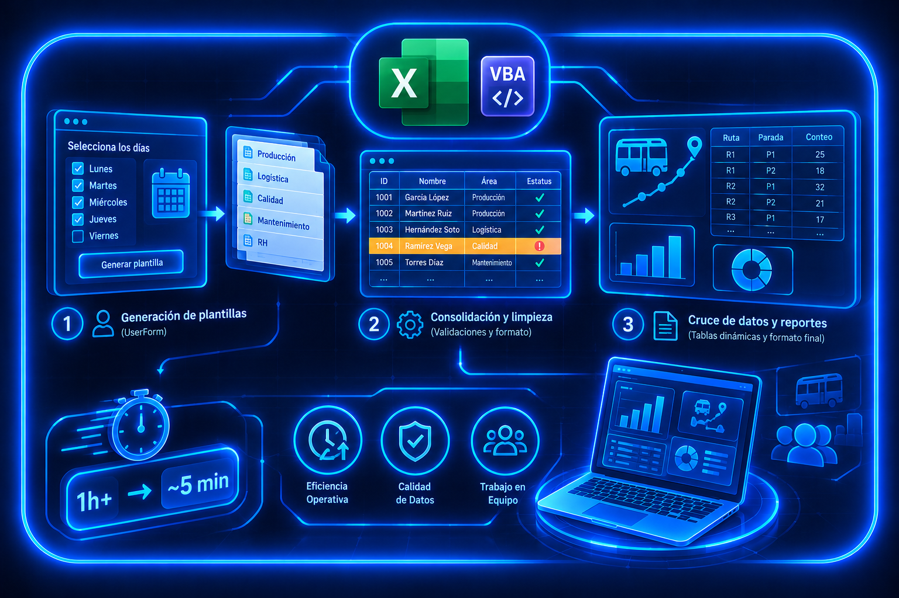
3. Sistema de Gestión de Casos de RH y Dashboard Directivo
Contexto y Desafío
Recursos Humanos implementó módulos de atención en áreas de producción para resolver solicitudes y problemas del personal operativo en sitio. Sin embargo, no existía un sistema estructurado para registrar las incidencias, hacer seguimiento a los tiempos de respuesta o medir el volumen y tipo de casos atendidos por área y responsable.
Solución
Diseñé e implementé una solución punta a punta utilizando el ecosistema de Microsoft Power Platform:
Diseño de Base de Datos y Formulario (SharePoint): Construí la estructura de almacenamiento en SharePoint definiendo tipos de datos, columnas y reglas de entrada, además del formulario de captura para que el personal de RH registre cada caso nuevo (ID de empleado, tipo de caso, responsable, estatus, etc.).
Automatización de Procesos y Alertas (Power Automate): Creación de tres flujos automáticos para optimizar el registro y seguimiento. El primero busca el ID de empleado en el maestro de personal (Excel) e importa automáticamente su nombre y departamento a SharePoint.El segundo flujo asigna automáticamente la fecha límite de atención (20 días hábiles a partir del registro). El último flujo envía recordatorios por correo al responsable 5 días antes del vencimiento y alertas de urgencia si el caso vence sin ser cerrado.
Dashboard de Seguimiento y Control (Power BI): Conecté Power BI a SharePoint, preparé el modelo de datos y diseñé un panel ejecutivo estructurado para conocer el desempeño del proyecto.
Resultados e Impacto
Digitalización Completa:Se sustituyó el seguimiento informal por una plataforma centralizada y automatizada.
Cumplimiento de SLA:Las alertas automáticas previenen retrasos y aseguran el cierre oportuno de solicitudes.
Visibilidad Ejecutiva: El dashboard le permite a RH identificar qué departamentos generan más incidencias y qué tipo de problemas son los más recurrentes para tomar medidas preventivas.
Recursos Implementados
Power BI, Power Automate, SharePoint Lists, Excel, Microsoft 365.
Diagrama del Dashboard
+-------------------------------------------------------------------------------------------------------+
| Filtros de Control: [ Año ▾ ] [ Mes ▾ ] [ Responsable ▾ ] [ Tipo de Caso ▾ ] [ Área ▾ ] |
+-------------------------------------------------------------------------------------------------------+
| |
| +----------------+ +----------------+ +----------------+ +----------------+ +-----------------+ |
| | Casos Totales | | % Solución | | Recordatorios | | Casos Fuera | | Prom. Días de | |
| | | | | | Enviados | | de Tiempo | | Solución | |
| | [ KPI ] | | [ KPI % ] | | [ KPI # ] | | [ KPI ] | | [ KPI ] | |
| +----------------+ +----------------+ +----------------+ +----------------+ +-----------------+ |
| |
+------------------------------------+------------------------------------------------------------------+
| Estatus de Casos | Top Responsables |
| (Gráfica de Anillos) | (Gráfica de Barras Verticales) |
| | |
| • Volumen general de casos | • Identifica al personal de RH con mayor cantidad de atención |
| (Abiertos, Cerrados, En Proceso) | y resolución de casos. |
+------------------------------------+------------------------------------------------------------------+
| Casos por Área | Tipo de Casos Resueltos |
| (Gráfica de Barras Horizontales) | (Gráfica de Barras Horizontales) |
| | |
| • Muestra los departamentos con | • Desglose comparativo para analizar qué tipo de caso |
| mayor fricción para ver en | o conflicto es el que ocurre con mayor frecuencia. |
| donde hay más problemas. | |
+------------------------------------+------------------------------------------------------------------+
4. Dashboard de Optimización de Abordajes y Modelado de Riesgo de Transporte
Contexto y Desafío
La gestión del transporte de personal requería reducir costos operativos (combustible, peajes y kilometraje) sin comprometer la capacidad de traslado de los empleados. La información diaria de abordajes se descargaba en reportes semanales masivos, lo que hacía técnicamente imposible calcular ocupaciones promedio, evaluar fusiones de rutas o monitorear variaciones drásticas en la demanda de pasajeros.
Solución
Diseñé e implementé una solución analítica de extremo a extremo que combina ETL en Power Query, modelado avanzado en DAX y teoría estadística de riesgo:
Diseño de Base de Datos y Formulario (SharePoint): Construí la estructura de almacenamiento en SharePoint definiendo tipos de datos, columnas y reglas de entrada, además del formulario de captura para que el personal de RH registre cada caso nuevo (ID de empleado, tipo de caso, responsable, estatus, etc.).
Automatización de Procesos y Alertas (Power Automate): Creación de tres flujos automáticos para optimizar el registro y seguimiento. El primero busca el ID de empleado en el maestro de personal (Excel) e importa automáticamente su nombre y departamento a SharePoint.El segundo flujo asigna automáticamente la fecha límite de atención (20 días hábiles a partir del registro). El último flujo envía recordatorios por correo al responsable 5 días antes del vencimiento y alertas de urgencia si el caso vence sin ser cerrado.
Dashboard de Seguimiento y Control (Power BI): Conecté Power BI a SharePoint, preparé el modelo de datos y diseñé un panel ejecutivo estructurado para conocer el desempeño del proyecto.
Resultados e Impacto
Ahorro Directo de Costos:Se identificaron e implementaron fusiones de rutas efectivas que compartían paradas, logrando una reducción directa en el uso de unidades, consumo de combustible, cobro de peajes y kilómetros recorridos.
Toma de Decisiones Basada en Riesgo:Se reemplazó la estimación intuitiva por un parámetro matemático (Probabilidad de Sobrecupo e Intervalos de Confianza) para garantizar que las fusiones no dejen personal sin transporte.
Monitoreo Proactivo: El sistema de alertas detecta automáticamente incrementos o caídas atípicas en el flujo de pasajeros antes de que generen problemas logísticos.
Recursos Implementados
Power BI, DAX Avanzado, Power Query, Geolocalización, Modelado Estadístico / Actuarial (Percentiles, Intervalos de Confianza, Matriz de Riesgo).
Diagrama del Dashboard
PESTAÑA 1: OCUPACIÓN SEMANAL
+-------------------------------------------------------------------------------------------------------+
| Filtros: [ Semana del Año ▾ ] [ Ruta ▾ ] [ Turno ▾ ] |
+-------------------------------------------------------------------------------------------------------+
| |
| Matriz de Ocupación por Dirección (Ida vs. Regreso) |
| +---------------------+-------------------+-------------------+------------------+----------------+ |
| | Ruta / Sentido | Cantidad Mínima | Cantidad Máxima | Promedio Diario | % Ocupación | |
| +---------------------+-------------------+-------------------+------------------+----------------+ |
| | Ruta A (IDA) | 12 | 42 | 31.5 | [ 78% ] | |
| | Ruta A (REGRESO) | 8 | 45 | 38.0 | [ 95% ] | |
| | Ruta B (IDA) | 5 | 20 | 14.2 | [ 45% ] | |
| +---------------------+-------------------+-------------------+------------------+----------------+ |
| |
| • Permite identificar rápidamente mediante el semáforo cuál es la ruta con mayor saturación semanal. |
+-------------------------------------------------------------------------------------------------------+
PESTAÑA 2: FUSIÓN DE RUTAS
+-------------------------------------------------------------------------------------------------------+
| Filtros: [ Ruta 1 ▾ ] [ Ruta 2 ▾ ] [ Turno ▾ ] [ Año ▾ ] [ Día de la Semana ▾ ] |
+-------------------------------------------------------------------------------------------------------+
| Tabla de Combinaciones Viables (Distancia Mínima de Paradas Cercanas) |
| [ Ruta Origen A + Ruta Origen B ] --> [ Evaluación: VIABLE / EN RIESGO / NO VIABLE ] |
+------------------------------------+------------------------------------------------------------------+
| Mapa de Paradas Compartidas | Distribución Combinada de Abordajes (Ruta 1 + Ruta 2) |
| | (Gráfica de Barras Agrupadas por Día de Semana) |
| • Puntos Color A: Paradas Ruta 1 | |
| • Puntos Color B: Paradas Ruta 2 | Abordajes ^ |
| • Tooltip: Nombre, Lat/Long | | Barras por Dirección (Ida/Regreso) |
| | |----------+--- Capacidad Máxima Autobús -------- |
| | | Barras por Dirección (Ida/Regreso) |
| | -------------------------------------------> Fecha |
+------------------------------------+------------------------------------------------------------------+
| Métricas de Decisión (IDA) | Métricas de Decisión (REGRESO) |
| +-------------------------------+ | +-------------------------------+ |
| | Promedio Combinado: 38 Paxs | | | Promedio Combinado: 44 Paxs | |
| | Percentil 95: 44 Paxs | | | Percentil 95: 49 Paxs | |
| | Prob. Sobrecupo: 2.1% | | | Prob. Sobrecupo: 18.5% | |
| | RESULTADO: VIABLE | | | RESULTADO NO VIABLE | |
| +-------------------------------+ | +-------------------------------+ |
+------------------------------------+------------------------------------------------------------------+
PESTAÑA 3: SEMÁFORO DE ALERTAS
+-----------------------------------------------------------------------------------------------------------+
| Filtros: [ Ruta ▾ ] [ Turno ▾ ] [ Escenario: Balanceado/Alta Sensibilidad ▾ ] [ Dirección ▾ ] |
+-----------------------------------------------------------------------------------------------------------+
| Monitor Global por Nivel de Alerta y Score (1 a 12 Puntos) |
| |
| 🟢 ESTABLE (Score 1-3) 🟡 MONITOREAR (Score 4-6) 🟠 PRECAUCIÓN (Score 7-9) 🔴 CRÍTICO (>9) |
| [Barra Score Ruta X] [Barra Score Ruta Y] [Barra Score Ruta Z] [Barra Score W] |
| (Separación por motivo: Incremento atípico de pasajeros vs. Disminución atípica) |
+-----------------------------------------------------------------------------------------------------------+
| Tarjetas Informativas de Diagnóstico (Ruta Seleccionada): |
| [ Motivo: Incremento de Pasajeros ] [ Diagnóstico: Media fuera de IC / Prob. Sobrecupo > 10% ] |
+-----------------------------------------------------------------------------------------------------------+
| Gráfica de Control: Flujo Actual (K viajes) vs. Histórico (N viajes) |
| |
| Pasajeros ^ ---------------------------- Límite Superior IC (Punteado) |
| | (Línea Flujo Actual) |
| | (Línea Flujo Histórico) |
| | ---------------------------- Límite Inferior IC (Punteado) |
| +------------------------------------------------------------> Fecha |
+-----------------------------------------------------------------------------------------------------------+
Aprendizajes
Colaboración y Trabajo Interdisciplinario
Aprendí que la solución de problemas requiere combinar diferentes perspectivas. En el desarrollo de mis proyectos, aporté conocimientos de análisis de datos, optimización y herramientas tecnológicas, mientras que los especialistas de cada proceso aportaron su experiencia operativa y conocimiento técnico. La interacción entre ambas perspectivas permitió plantear soluciones que no solo fueran técnicamente viables, sino también útiles para las necesidades reales del área.
Gestión de Proyectos Simultáneos
Desarrollé la capacidad de trabajar en múltiples proyectos de manera paralela, manteniendo avances y entregables mientras atendía nuevas necesidades del área. Esto implicó organizar actividades, establecer prioridades, administrar tiempos y adaptar la planificación conforme surgían nuevos requerimientos.
Comunicación y Entrega de Resultados
Aprendí a transformar análisis técnicos en información clara y relevante para la toma de decisiones. Esto implicó desarrollar presentaciones ejecutivas, seleccionar los resultados más importantes en función del tiempo disponible y adaptar el lenguaje técnico a diferentes audiencias, especialmente al comunicar conceptos de datos, automatización y análisis a personas sin especialización en estas áreas.
Adaptabilidad y Selección de Soluciones
Aprendí a evaluar diferentes alternativas antes de decidir cómo abordar un problema, considerando tanto las necesidades del proceso como los recursos disponibles. No siempre la solución más compleja es la más adecuada; por ello, desarrollé el criterio para seleccionar la herramienta y metodología que permitieran resolver cada necesidad de forma práctica, eficiente y sostenible.
Aplicación del Perfil Actuarial
La experiencia me permitió comprobar el valor del perfil actuarial más allá del modelado matemático. Pude participar en distintas etapas del ciclo de información: captura y digitalización, limpieza y transformación, automatización, visualización y análisis, hasta convertir los datos históricos en información útil para la toma de decisiones. Esto reforzó mi capacidad para integrar conocimientos estadísticos y analíticos con herramientas tecnológicas y necesidades de negocio.
Certificaciones
La Society of Actuaries (SOA) es una de las
principales organizaciones profesionales
actuariales a nivel mundial, dedicada al
desarrollo de conocimientos y estándares
para la medición y gestión del riesgo.
Los exámenes aprobados P, FM y SRM representan
una base técnica en probabilidad,
matemáticas financieras y modelación estadística,
respectivamente.
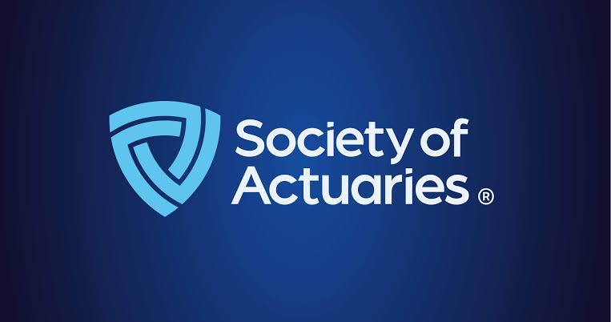
Exam P (Probability)
Fundamentos de probabilidad: axiomas, propiedades
probabilidad condicional, independencia
y Teorema de Bayes.
Variables aleatorias, distribuciones de
probabilidad y momentos estadísticos.
Aplicación práctica de conceptos probabilísticos
al análisis de riesgos aseguradores calculando pérdida
esperada en casos de deducible o límite de póliza.
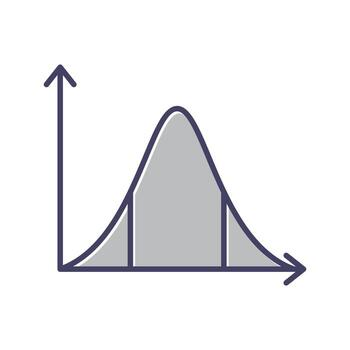
Exam FM (Financial Mathematics)
Valor del dinero en el tiempo: tasas de interés,
valor presente y futuro.
Estructuración de anualidades, amortización de préstamos
y valuación de bonos.
Gestión de activos y pasivos mediante duración,
convexidad y curvas Spot.
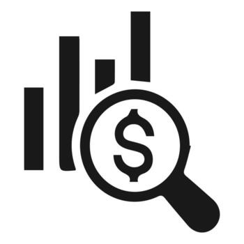
Exam SRM (Statistics for Risk Modeling)
Modelos de aprendizaje supervisado (regresión lineal, regresión logística, árboles de
decisión, bosque aleatorio, clasificador de Bayes, KNN) y
modelos para series de tiempo (AR, MA, ARIMA).
Técnicas de aprendizaje no supervisado
y reducción de dimensionalidad (K Means, PCA, Hierarchical Clustering).
Evaluación y selección de modelos mediante
regularización Ridge/ Lasso, criterios de AIC/BIC, RMSE o R^2 ajustado y validación cruzada.
Selecciona un área de especialidad para explorar
los casos prácticos detallados:
Machine Learning y Análisis Predictivo
Modelo de Scoring de Propensión de Compra
Predicción de Enfermedad mediante Modelos de Clasificación
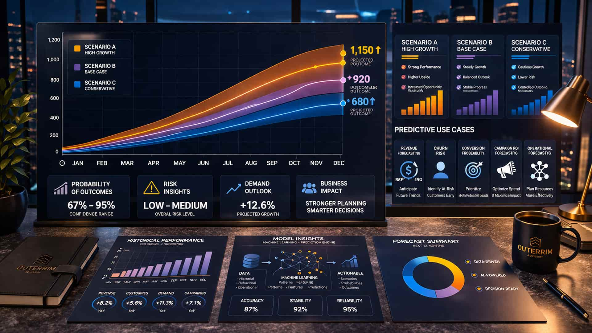
Business Intelligence
Dashboard Ejecutivo de Riesgo Crediticio
Modelación Cuantitativa y Riesgos
Estimación del VaR y Expected Shortfall de un Portafolio de Acciones
Modelo de Compensación Actuarial
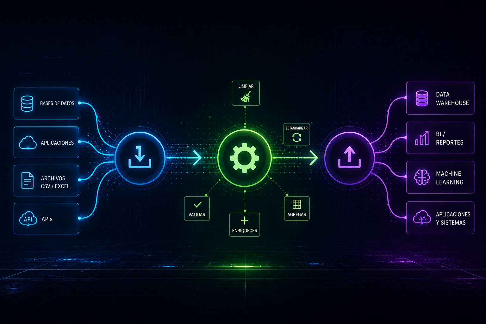
Preparación y Análisis de Datos
Bike Store: Análisis de Datos con SQL
Machine Learning y Análisis Predictivo
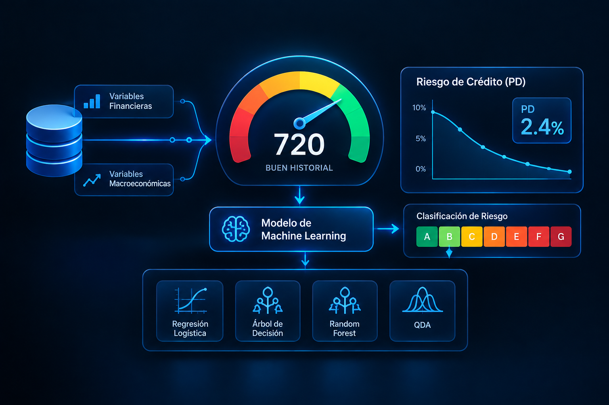
Modelo de Scoring de Propensión de Compra
Herramienta:
R Studio, Excel
Tipo de Proyecto:
Académico | Colaborativo
Descripción:
Desarrollo de un modelo de scoring para estimar la propensión de compra de clientes a partir de variables
demográficas y de ingreso. Mediante Regresión Logística se estimaron probabilidades de compra y se transformaron
en un sistema de puntuación segmentado por rangos de riesgo. El modelo fue evaluado mediante técnicas de discriminación
y validación como Weight of Evidence (WoE), Kolmogorov-Smirnov, Índice de Gini, Information Value (IV), curva ROC/AUC y
matriz de confusión.
Fuentes de Datos:
Datos demográficos y comportamiento de compra de clientes
Predicción de Enfermedad mediante Modelos de Clasificación
Herramientas Utilizadas:
R Studio
Tipo de Proyecto:
Académico | Colaborativo
Descripción:
Desarrollo y comparación de modelos de clasificación para predecir la presencia de una enfermedad a partir de
variables clínicas de pacientes. Se entrenaron y evaluaron modelos de Regresión Logística, Árbol de Decisión,
Random Forest y Análisis Discriminante Cuadrático (QDA), utilizando conjuntos de entrenamiento y prueba.
La selección del modelo se orientó a maximizar el Recall, priorizando la reducción de falsos negativos por su
mayor impacto en el contexto del problema.
Fuentes de Datos:
Datos clínicos de pacientes · Kaggle
Descripción:
Diseño y desarrollo de un dashboard ejecutivo en Power BI para visualizar los principales indicadores asociados
a solicitudes de crédito. El reporte integra KPIs de volumen, montos, aprobación y riesgo, junto con visualizaciones
para analizar la evolución y distribución de la información. Se incorporó un menú de filtros interactivos para
facilitar la exploración de los datos por características demográficas y financieras.
Fuentes de Datos:
Financial Risk for Loan Approval Dataset · Kaggle
Estimación del VaR y Expected Shortfall de un Portafolio de Acciones
Herramientas Utilizadas:
R Studio, Python
Tipo de Proyecto:
Académico | Colaborativo
Descripción:
Estimación del riesgo de mercado de un portafolio compuesto por 20 acciones del S&P 500 mediante el cálculo de Value at Risk (VaR) y Expected Shortfall (ES)
a niveles de confianza del 95%, 97% y 99%. Se implementaron en R metodologías paramétricas y no paramétricas, incluyendo Simulación Histórica, Monte Carlo con distribuciones Normal y Laplace,
Bootstrap y Alisado Exponencial, evaluando el riesgo tanto a nivel individual como para el portafolio completo.
Fuentes de Datos:
Precios históricos de cierre de 20 acciones del S&P 500 · Yahoo Finance
Descripción:
Desarrollo de un modelo actuarial para estimar una compensación económica mediante la simulación de la trayectoria
laboral e ingresos futuros de un individuo hasta la edad de retiro. El modelo integra proyecciones salariales,
probabilidades de supervivencia, inflación y tasas de interés, utilizando simulación estocástica y técnicas actuariales
para estimar el valor presente de los flujos económicos esperados.
Fuentes de Datos:
ENIGH 2024 · Tablas de mortalidad · Banxico · CETES y Bonos M
Descripción:
Análisis de una base de datos relacional de una tienda de bicicletas mediante 12 consultas SQL de nivel
intermedio a avanzado orientadas a obtener información relevante para el negocio. El proyecto incluye
el análisis de la estructura y relaciones del modelo de datos mediante un diagrama EER, así como el uso de
filtros, JOINs, subconsultas, agregaciones y funciones de MySQL para explorar ventas, productos, clientes
y otros indicadores del negocio.
 Correo:
eduardoleyvadz@gmail.com
Correo:
eduardoleyvadz@gmail.com
 LinkedIn:
Ver perfil
LinkedIn:
Ver perfil